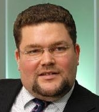

Леван Васадзе, Председатель
В прошлом - генеральный директор и председатель совета директоров страховой компании «РОСНО»; первый вице-президент АФК «Система».
Леван обладает 20-летним опытом в прямых инвестициях, инвестиционно-банковском деле и менеджменте в России и странах СНГ. До основания Prometheus Capital Partners Леван был генеральным директорм и председателем совета директоров страховой компании «РОСНО», принадлежащей АФК «Система», одной из крупнейших финансово-промышленных групп в России. За шесть лет работы в «РОСНО» капитализация компании выросла в 34 раза, и компания была продана Allianz AG в 2007 году за $1,5 млрд. Ранее Леван был первым вице-президентом АФК «Система» и руководил комплексом стратегии и развития. Под руководством Левана компании группы провели 4 размещения на Лондонской фондовой бирже и одно размещение на NYSE. Леван имеет степень MBA от Emory University в США и диплом с отличием в области геофизики Тбилисского государственного университета.
Том Коско, Старший партнер
В прошлом – генеральный директор компании Pacific Toxicology Laboratories (США), управляющий директор Creditanstalt Moscow, партнер международной юридической фирмы Kirkland & Ellis.
Том – один из партнеров-основателей фонда. В 2004 – 2008 гг. Том был генеральным директором и основным акционером компании Pacific Toxicology Laboratories в Лос-Анджелесе, США. До этого Том был управляющим директором и со-основателем московского офиса инвестиционного банка Creditanstalt и руководил торговыми операциями с ГКО. В начале своей карьеры Том был партнером в международной юридической фирме Kirkland & Ellis в отделе корпоративных транзакций. Том имеет степень MBA и JD (доктор юриспруденции) Chicago University в США, степень бакалавра Rice University в США.

Dmitriy Manakov, Senior Partner
Ex-McKinsey & Co consultant with vast industrial and analytical experience. Former Head of the office of CEO at TNK-British Petroleum. Physics Graduate from Moscow Physical-Technological University and Physics and MBA graduate from Georgia Tech University, Atlanta USA.